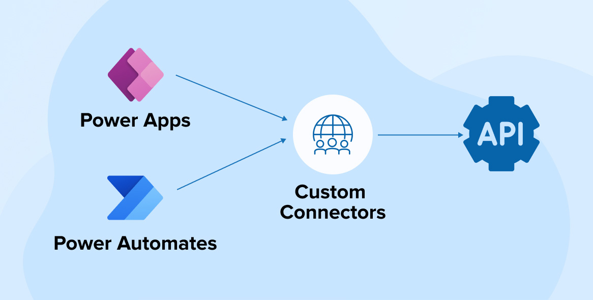

16. April 2024Security in Power Apps Best Practices für rollenbasierte Sicherheit und Zugriffskontrolle. Lesen
5. April 2024Custom Connectors  Wie man eigene Konnektoren für Power Platform erstellt und integriert. Lesen